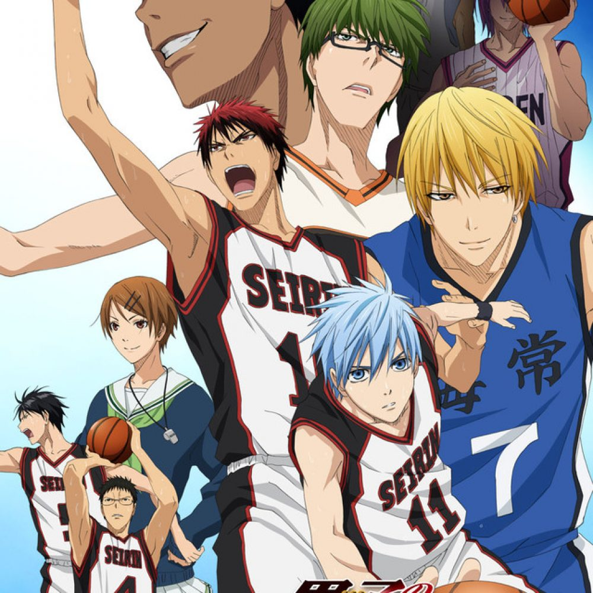

Главная страница
Краткое описание
Баскетбол Куроко — японская манга о баскетболе, автором является Тадатоси Фудзимаки. История посвящена баскетбольной команде Сейрин, которая пытается стать победителем баскетбольного турнира. На их пути стояли бывшые ученики Тейко с самыми выдающимися талантами. Победить такую команду не удавалось никому,

Сюжет
Баскетбольная команда Тейко завоевала признание благодаря победе в "Зимнем кубке". Основной состав команды стал известен как «Поколение Чудес». После окончания средней школы эти пять игроков разошлись по разным школам. Лишь немногие знали, что помимо этих пяти, был ещё один, «Призрачный шестой игрок». Этот загадочный юноша поступил в Сейрин, с никому не известной, но многообещающей командой.

Отзывы
Баскетбол Куроко собрал в Японии множество положительных отзывов, часто занимая первые места в различных чартах, и имел способность оставаться там по нескольку недель. Особую популярность «Баскетболу» привлек выпуск аниме-версии, после чего также стремительно возрос и объем продаж томов Манги: с 300 000 копий до 500 000.